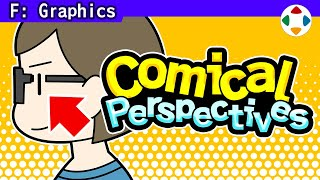
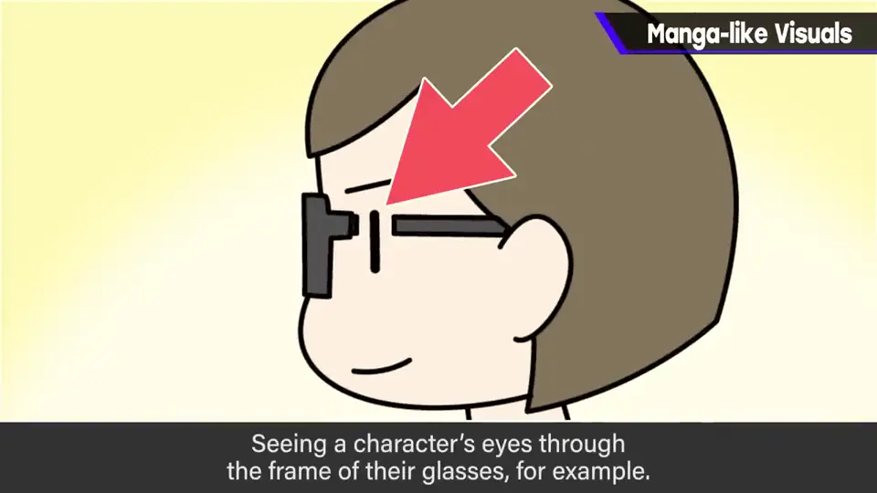
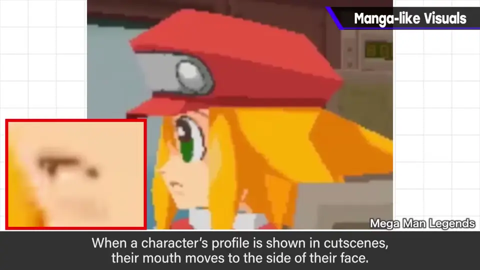
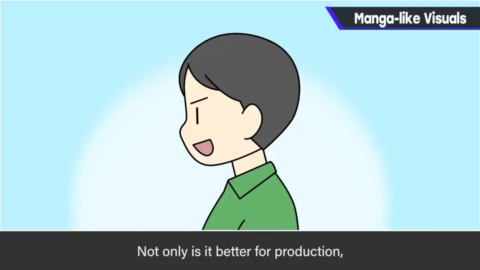
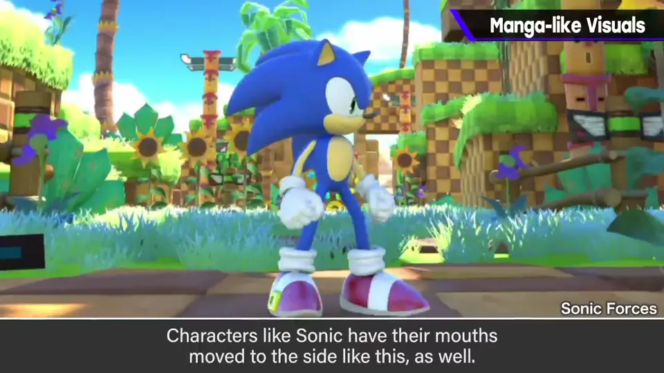
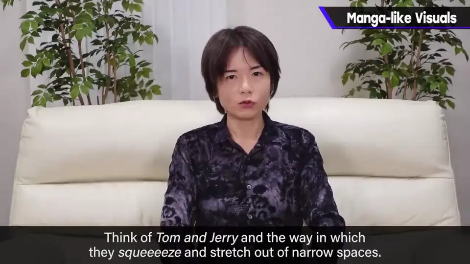
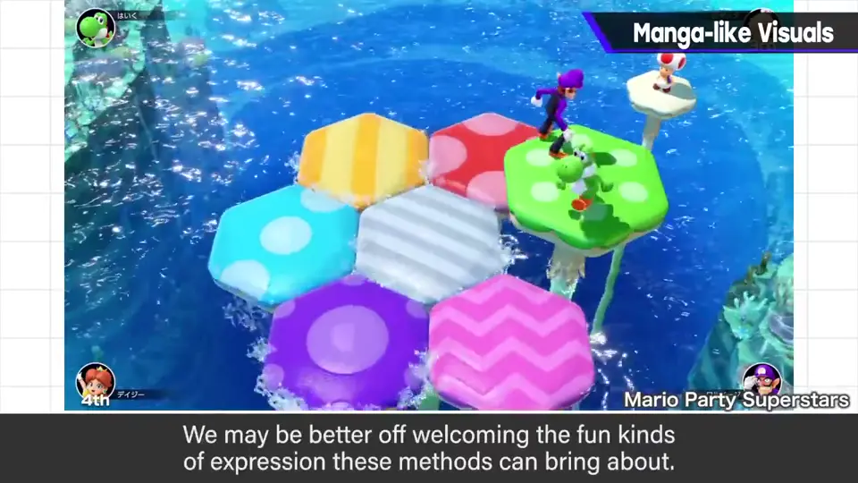
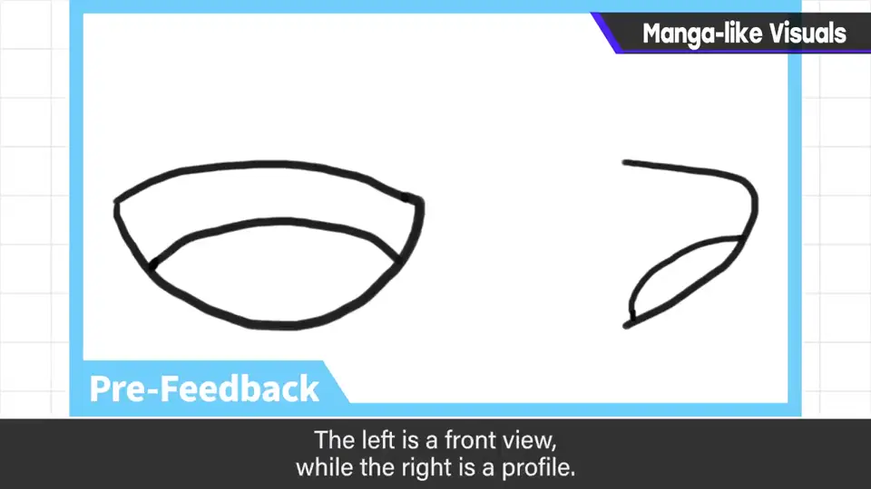
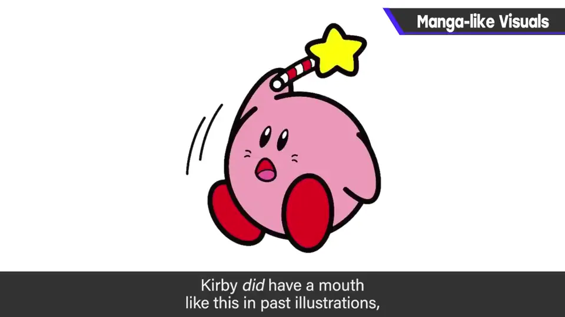
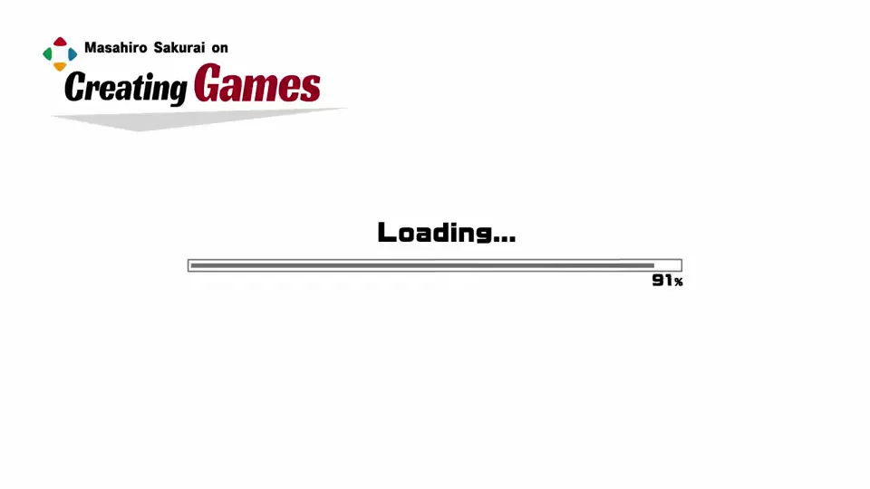

速览
说到漫画式表现，会想到卡通渲染，但先放一边。日本的漫画和动画常有有趣的表现：如眼睛透过眼镜侧框露出来、侧面看的嘴等，当然也可以用在游戏里。《洛克人 DASH》有个让他震撼的表现：过场中出现侧脸时，嘴长在侧面——漫画动画中常见，难说自然，但很适合动画：不动下巴只换赛璐珞就能表现，不只是制作方的情况，嘴的动作也易懂。那这个侧脸实际看模型是什么样呢？还是别多想。索尼克的嘴也偏向侧面，细想很怪，但作为角色表现很好。为了漫画表现，有时反而会带来很麻烦的 CG 结构：像《猫和老鼠》那样从窄处挤到宽处的表现，在 CG 里正经做相当难，要用形变动画等。但他完全不认为「不写实就该避免漫画表现」，反而推荐：因此有趣的表现增加是应该欢迎的。附赠《大乱斗 特别版》的监修故事：卡比和胖丁嘴的模型原本是这样（左正面、右断面），有点旧的表现，像以前的卡比插画（那不是他画的）；他多次要求去掉「胡须」（嘴角），没被接受。他指示改成这样，实际模型接近这个。并排看：实际嘴的断面上面那个更接近，但作为表现下面那个更好。不察觉就无从谈起：不要把理所当然当成理所当然，追求恰当或强调的表现。
1. 漫画式的有趣表现 0:04
说到漫画式表现，会想到卡通渲染，这次先放一边。日本的漫画和动画常有些有趣的表现，比如眼睛透过眼镜侧框露出来、侧面看的嘴等。

这些当然也可以用在游戏里。
2. 《洛克人 DASH》的侧脸 0:33
《洛克人 DASH》有个让他受到冲击的表现：过场中出现侧脸时，嘴长在侧面。漫画和动画中常见。


难说自然，但很适合动画：不动下巴、只换赛璐珞就能表现。不只是制作方的情况，也许还因为嘴的动作更易懂。
那这个侧脸，实际看模型是什么样呢？……还是别多想。索尼克的嘴也偏向侧面，细想很怪，但作为角色表现很好。

3. CG 难做，但推荐 1:25
为了漫画表现，有时反而带来很麻烦的 CG 结构。像《猫和老鼠》那样从窄处一下挤到宽处的表现，CG 正经做相当难，要用形变动画等。


4. 卡比与胖丁的嘴 1:58
附赠《大乱斗 特别版》的监修故事：卡比和胖丁嘴的模型原本是这样（左为正面，右为断面）。


有点旧的表现，像以前的卡比插画——那不是他画的。他多次要求去掉「胡须」，没被接受。
他指示改成这样，实际模型也接近这个。并排看：

5. 别把理所当然当理所当然 2:37
不察觉就无从谈起。不要把理所当然当成理所当然，去追求恰当的、或强调的表现。
自测题
1. 《洛克人 DASH》侧脸的嘴为何适合动画？
不动下巴只换赛璐珞就能表现，嘴的动作也更易懂。 0:50
2. 樱井对「不写实就避免漫画表现」怎么看？
完全不认同，反而推荐；增加有趣的表现是应该欢迎的。 1:40
3. 卡比/胖丁嘴型修改后，哪一种更好？
实际断面旧版更接近，但作为表现修改后的更好。 2:35